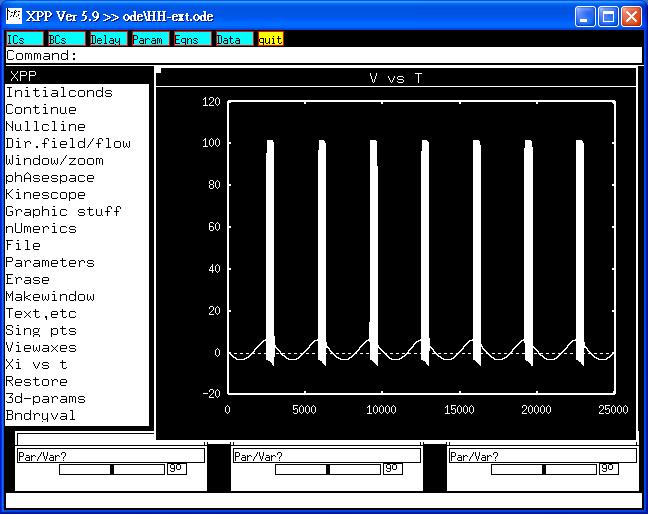

This is the readme.txt for the model associated with the paper Wang J, Si W, Che Y, Fei X. Spike trains in Hodgkin-Huxley model and ISIs of acupuncture manipulations. Chaos, Solitons & Fractals 2008; 36:890-900 Abstract: The Hodgkin-Huxley equations (HH) are parameterized by a number of parameters and shows a variety of qualitatively different behaviors depending on the parameter values. Under stimulation of an external periodic voltage, the ISIs (interspike intervals) of a HH model are investigated in this work, while the frequency of the voltage is taken as the controlling parameter. As well-known, the science of acupuncture and moxibustion is an important component of Traditional Chinese Medicine with a long history. Although there are a number of different acupuncture manipulations, the method for distinguishing them is rarely investigated. With the idea of ISI, we study the electrical signal time series at the spinal dorsal horn produced by three different acupuncture manipulations in Zusanli point and present an effective way to distinguish them. ------- To run the models: XPP: start with the command xppaut HH-ext.ode This simulation will make graph similar to Figure 3 in the paper of Wang et al. Measurement of ISI can also be made under xpp.  Bard Ermentrout's website http://www.pitt.edu/~phase/ describes how to get and use xpp. These model files were submitted by: Sheng-Nan Wu and Yung-Hun Wu Cardiac Electrophysiology and Systems-biology Center National Cheng Kung University Medical Center Tainan 70101, Taiwan snwu@mail.ncku.edu.tw